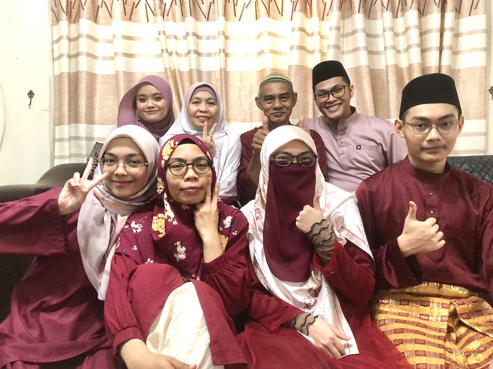
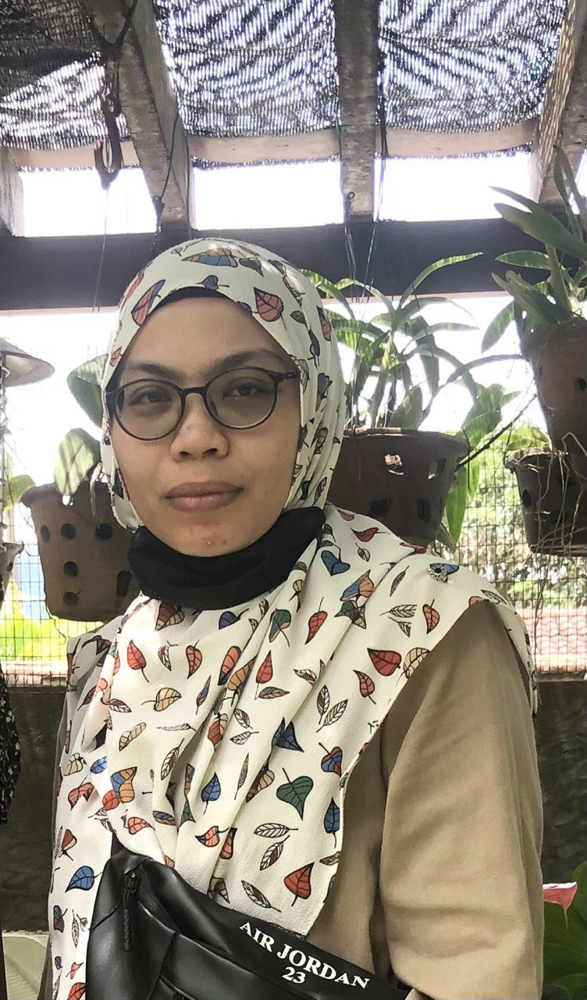
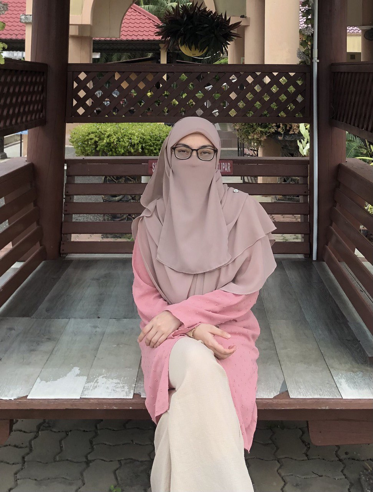
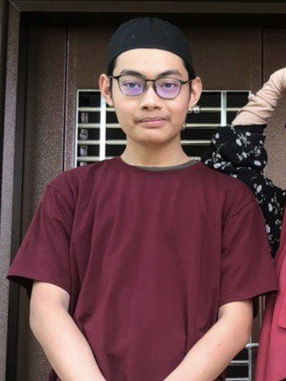

Family Background
I am from a family of 8 and I have a total of 6 siblings including myself and I am the 5th child out of the them. Living my whole life with 2 older sisters, 2 older brothers and 1 younger brother until I continued my studies at 18, I had a great bond with them. We fought a lot but we cares deeply towards one another.
Parents

My father is Che Abdullah Bin Mohd Ali. He was born on the 20th May 1960 at Selangor in a family of 10. He is the 6th child out of 8. Although he wasn't the youngest child, but his older siblings still calls him "Adik" until now. He was raised in a religous family as his late father which is my grandfather is an Imam at a surau in his neighbourhood and people usually calls him "Lebai Ali" or "Imam Ali". My grandmother on the other hand, is a housewive and also sells kuih and Nasi Lemak around the area. Now, my father is a 63 years old retired air force TUDM. He has retired for about 25 years but after he retired, he still worked for TUDM but under a private agency as a technician in Subang Airport until he was 60 years old. After SPM, he directly went to military air force and didn't continue for further studies but he proves that he made it even without a diploma or a degree holder. Hence, why I think he is an inspiration to our family. He made us believe that success isn't just by certificates but through your hardwork and passion as well. His characteristics is that he is a strict but also a loving parent. As an army, I believe that is why he was strict towards his children before. Now, that we are older, he is less strict and let us decide everything in our life. I truly believe that now he is my lifetime advisor and I am really grateful for him.
My mother is Mahizan Binti Abdul Ghani. She is a 59 years old full time housewive and has never work before except that she used to sell Nasi Dagang back when I was in primary school. Now, she help my sister with her business which is selling desserts and drinks on a food truck. She was born on the 4th January 1964 in Selangor in a family of 7. She is the 3rd child out of 5. Her late father used to be a medical military man and when he retired, he open a small business as a chicken breeder and soon after, he open a grocery store. Her late mother is a full time housewive and helps with the business as well. My mother grew up helping my late grandfather's business even after she was married with my father. Like my father, she only take up until SPM. At 23, she married my father through a family connection. They both lived in the same area. Hence, why their late parents know each other and match them up. Her characteristics is that she is my father's backbone, a very strong women, and the one in charge of taking care of the family. She never showed her weaknesses and always stand strong with her principles. I believe that she is quite fierce and strict in raising her children. But thanks to that, all of her children become a good human being and not distorted by their social environment.
Eldest Sister
Nurulain Binti Che Abdullah is a 36 years old eldest daughter in the family. She was born on the 23rd November 1987 in Kuala Lumpur. At 24, she completed her Diploma in Business Management at International Islamic College, Gombak. After that, she worked at Aeon Bank Credit for several years and then she moves to working at a private college until she was 29. Due to her severe backaches, she lost her passion to work in such environments. Thus, she pursue her passion in a food and beverages business. At first she sells infront of a school nearby our house for 2 years. And now, she open up her own food truck business with the help of our parents.
Eldest Brother

Asyraf Bin Che Abdullah is 33 years old and he is the eldest son in the family. He was born on the 1st December 1990 in Kuala Lumpur. He is the only child in the family to attend an Islamic high school or known as a "Tahfiz". Instead of pursuing studies after SPM, he worked at Nando's which is a South Africaan's franchise restaurant in Kuala Lumpur. After several years spending his time working there, he got promoted as a manager and then moved to Nando's at Singapore until the Covid-19 pandemic came. He got terminated and come back to Malaysia for a short while and then move back to Singapore. Now, he is married with 2 children, Adilya and Shaaf Anas. His wife is Wan Nur Shafika and she is 32 years old from Shah Alam. Adilya, their daughter is 6 years old while Shaaf Anas is 3 years old. They are currently living in Masai, Pasir Gudang, Johor.
Middle Brother

Azizuddin Bin Che Abdullah is a 30 years old middle son in the family. He was born on the 8th June 1993 at Kuala Lumpur. After SPM, he continued his studies in mechanical engineering at a private institute until suddenly he quit due to lost of interest in studying. After that, he followed our brother, Asyraf and work at several food chain in Kuala Lumpur such as Nando's and Manhattan Fish Market for a few years until he got a job at Singapore. However, his contract got terminated and he had to moved back to Kuala Lumpur. Then, he married his wife, Farah Izzati in 2020 during the pandemic. Now, he is currently working as a Grab Food driver to support his family while waiting for a job call from Singapore.
Middle Sister
Noraliyah Binti Che Abdullah is the 4th child in the family and was born on the 7th August 1997 at Kuala Lumpur. She is 26 years old and currently working as a graphic designer. After SPM, she pursued her studies as a foundation student in fine arts at ASWARA for a year. She continued her studies in degree of fine arts at the same college as well for another 4 years. After degree, she join a NGO organization that specializes in charity works, motivational campaigns and outdoor activities for 2 years. Then, she work as a part-time tutorial lecturer in ASWARA, the place where she studied for about a year before she continued her journey to attend a private Islamic academy for almost a year at Setapak. After that is when she work as a graphic designer where she is right now at Sri Hartamas, Kuala Lumpur.
Youngest Brother
Amzar Bin Che Abdullah is an 18 years old youngest child in the family and the most quiet one among us. He doesn't talk too much and only like to talks when he needed to. He was born on the 13th October 2005 in Kuala Lumpur. He just finishes SPM this year and currently waiting for the results. For the time being, he just spend his time helping our parents at home. He is a devoted son to our parents and does everything that our parents asked for including the religious matters. In his free time, he likes to read books like novels and manga. Other than that, he also likes to spend it reading the Quran and recently he just finishes it. Sometimes he loves playing games on his phone like Mobile Legends and such. He's just living his life as a teenager with no excessiveness of entertainment at the same time being a good son to our parents who are getting older.